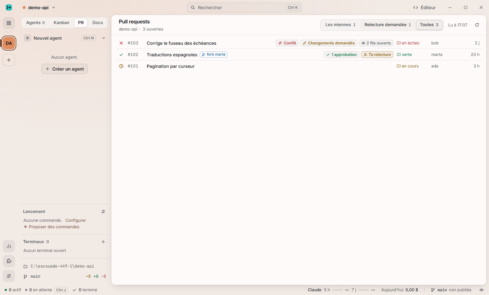
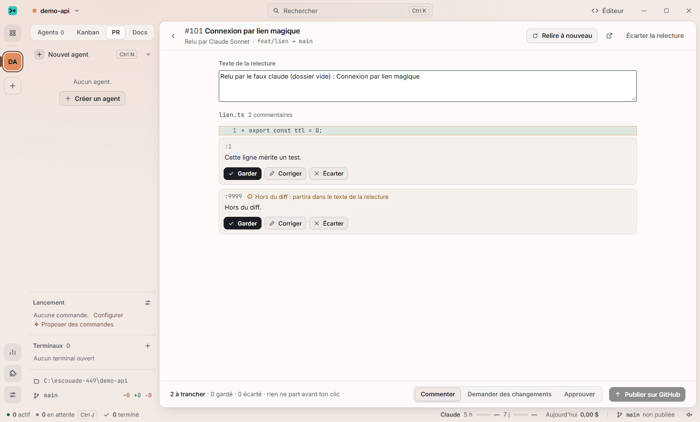
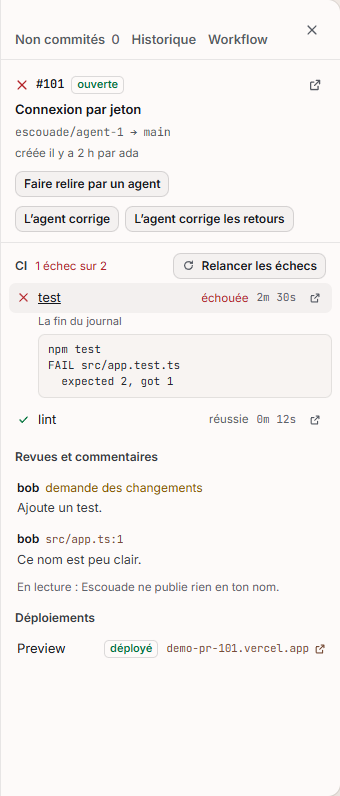
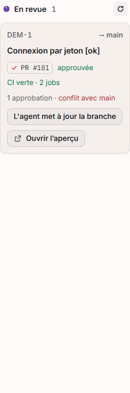

Les PR dans Escouade · trois directions
ESC-449, pour la 2.3. Voir la PR dans Escouade, laisser un agent relecteur la commenter à côté du code comme le ferait un humain, et mieux la contrôler. Trois maquettes statiques dans le style de l'app (jetons, polices, icônes de la 2.0), sur une même PR fictive : #214 « Connexion par lien magique », ouverte par l'agent du ticket ATL-42 et relue par l'agent « Relecteur ».
Aujourd'hui
La PR existe dans Escouade en quatre morceaux, et jamais en entier : on ne voit ni sa description, ni son diff, ni ses commits. Les relectures se lisent sans y répondre. Celle de l'agent est un brouillon à trier, sans dialogue. Le merge ne se fait que depuis la carte d'un ticket. Captures prises dans la vraie app (debug), sur le faux GitHub des e2e.




Les trois en un coup d'œil
| A · L'onglet de la PR | B · La relecture dans l'éditeur | C · La PR à côté de l'agent | |
|---|---|---|---|
| L'idée | La PR comme chez l'hébergeur, dans la place de travail : onglets Conversation, Commits, Contrôles, Fichiers ; la colonne de droite la pilote. | La PR est un mode de l'éditeur : arbre des fichiers modifiés, diff au centre, remarques dans la marge à hauteur de leur ligne ; le reste dans un tiroir. | Deux colonnes : l'agent (du ticket ou relecteur) à gauche, la PR à droite, sous une carte « Prête à merger ? » ; les remarques en fil d'actualité. |
| Voir la PR | Tout, à sa place habituelle | Le code d'abord ; description et discussion dans le tiroir | Remarques d'abord ; le diff entier est un onglet étroit |
| L'agent commente à côté du code | Fils dans le diff, sous leur ligne | Dans la marge, en face de la ligne, le code jamais caché | Chaque remarque porte ses lignes ; « Dans l'éditeur » pour le reste |
| « Demander à l'agent de corriger » | Un bouton ; l'agent travaille ailleurs | Un bouton ; l'agent travaille ailleurs | L'agent est juste à côté : on voit la remarque arriver et le travail se faire |
| Contrôle de la PR | Colonne de droite et boîte de merge toujours visibles | Barre du haut et menus ; relecteurs et étiquettes dans le tiroir | Carte « Prête à merger ? » : ce qui bloque, et le geste qui débloque |
| Dépend de | Rien de neuf : un diff à nous (CodeMirror, déjà là) | L'éditeur de la 2.3 (vue VS Code, A1 à A8) pour être bien fait | Les colonnes côte à côte (split view) |
| Coût estimé | Moyen : ~9 tickets | Élevé : ~11 tickets, dont l'API des commentaires de VS Code | Moyen : ~9 tickets |
AL'onglet de la PR recommandée
Un clic sur une PR (vue « Pull requests », carte « En revue », onglet « PR et CI », pastille de l'agent) l'ouvre dans la place de travail, comme le Kanban. Les remarques de l'agent sont des fils dans le diff, sous leur ligne, avec sa sévérité, ses suggestions et ses gestes ; la colonne de droite dit qui relit, les étiquettes, brouillon ou prête, la branche, et la boîte de merge dit ce qui manque.
Ce qu'elle favorise
- Ce qu'on connaît : la grammaire de GitHub et de GitLab, rien à apprendre.
- Tout de la PR, au même endroit, et le contrôle toujours visible à droite.
- Se construit sur ce qui existe : la vue « Pull requests » mène à la PR au lieu du navigateur ; la relecture d'ESC-66 devient l'onglet Fichiers.
- Ne dépend pas du chantier de l'éditeur : elle peut sortir avant lui.
Ce qu'elle coûte
- Refaire une page d'hébergeur : diff, fils, timeline, boîte de merge (le gros du travail).
- Un diff à nous, sans serveur de langage ni « aller à la définition ».
- L'agent qui corrige est ailleurs : on suit son travail par la pastille « corrige… » ou en ouvrant l'agent.
- Une vue de plus dans une app qui en a déjà beaucoup.
BLa relecture dans l'éditeur
Ouvrir une PR met l'éditeur en mode relecture : à gauche les fichiers modifiés (vus, remarques par fichier), au centre le diff, à droite la marge où chaque remarque se pose en face de sa ligne. Une barre du haut porte l'état, la CI, les approbations, « Approuver » et « Merger » ; un tiroir en bas porte la description, les commits, les contrôles, la discussion et les relecteurs.
Ce qu'elle favorise
- Le code d'abord : on relit comme on code, le fichier entier à un clic, les remarques ne cachent jamais une ligne.
- Avec la vue VS Code (décidée pour la 2.3) : serveurs de langage, « aller à la définition » pendant la relecture, et l'API des commentaires de VS Code faite pour cela.
- Corriger soi-même dans la foulée : on est déjà dans l'éditeur.
Ce qu'elle coûte
- Dépend de l'éditeur de la 2.3 : sans lui, il faut tout faire deux fois (CodeMirror, puis VS Code).
- La PR se voit mal en entier : description, discussion et commits sont repliés dans un tiroir.
- La marge prend 340 px : serrée en dessous de 1280 px, impossible en colonne étroite.
- Le plus cher des trois ; l'éditeur change de rôle (on y relit aussi).
CLa PR à côté de l'agent
La PR devient une colonne, à côté de la conversation de l'agent. En tête, une carte « Prête à merger ? » en quatre cases (contrôles, relecture, approbations, branche), chacune avec ce qui bloque et le geste. Dessous, les remarques en fil d'actualité, chacune avec ses lignes. « Demander à l'agent de corriger » dépose la remarque dans la conversation de gauche, et on regarde l'agent la traiter.
Ce qu'elle favorise
- L'identité d'Escouade : la PR est un travail d'agents, on les voit relire et corriger.
- La décision : la carte dit d'un coup ce qui manque pour merger, et comment le débloquer.
- Le passage remarque → correction, sans quitter l'écran.
Ce qu'elle coûte
- La colonne de la PR est étroite : un diff entier s'y lit mal, une relecture humaine longue aussi.
- Une PR sans agent (celle d'un collègue) laisse la colonne de gauche vide ou demande d'en lancer un.
- Les remarques en fil d'actualité perdent l'ordre des fichiers.
Recommandation : A, avec deux emprunts
A répond aux trois demandes sans attendre l'éditeur, et prolonge ce qui existe : la vue « Pull requests » ouvre la PR au lieu du navigateur, la relecture d'ESC-66 devient l'onglet Fichiers avec de vrais fils. Elle se lit comme GitHub, ce que l'utilisateur et ses collègues savent déjà faire.
De C, je garde la boîte « prête à merger ? » qui dit ce qui bloque avec le geste (déjà dans A, à droite), et le geste « Demander à l'agent de corriger » qui ouvre l'agent dans une colonne à côté de la PR (split view), au lieu de l'envoyer ailleurs.
De B, je garde « Ouvrir dans l'éditeur » sur chaque fil : quand la vue VS Code sera là, une PR pourra s'y relire avec la marge, sans refaire A.
Le découpage proposé (détail dans README.md)
- PR-1 Lire une PR entière chez l'hébergeur : description, commits, fichiers, fils avec leurs lignes et leurs réponses (opérations et capacités des plugins, GitHub d'abord).
- PR-2 La vue de la PR : en-tête, onglets, ouverte depuis la vue « Pull requests », la carte « En revue », l'onglet « PR et CI » et la pastille de l'agent.
- PR-3 L'onglet Fichiers : diff unifié coloré, arbre des fichiers, « Vu », gros fichiers repliés.
- PR-4 Les fils : commenter une ligne, répondre, résoudre, rouvrir, chez l'hébergeur.
- PR-5 L'agent relecteur en fils : ses remarques sous leur ligne, sévérité, suggestions ; remplace le brouillon d'ESC-66.
- PR-6 Parler à l'agent relecteur et faire corriger : il répond dans le fil ; « Demander à l'agent de corriger », « Appliquer la suggestion ».
- PR-7 Ta relecture : approuver, demander des changements, commenter.
- PR-8 Le contrôle : brouillon ou prête, relecteurs, étiquettes, mise à jour de la branche, relance d'un contrôle, boîte de merge.
- PR-9 Les états, la spec, la doc du site et les autres hébergeurs (GitLab, Gitea / Forgejo, Bitbucket, Azure DevOps).